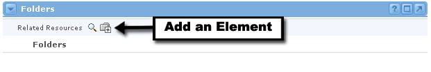
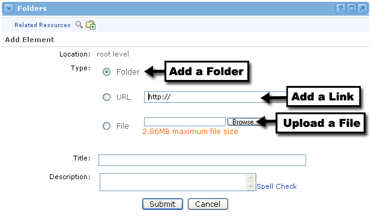
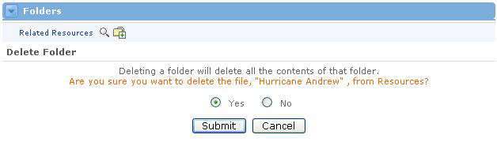

Folder Management :Share Information
:Share Information
What is a Folder?
Occasionally it may become necessary for the Sponsor or Instructor to share information, documents, or web page links with other users within the offering. This can be done through the Folders channel. The Folders channel is a hierarchical directory of folders and subfolders that can be set up to best meet the needs of the Offering.

Adding Folders
While it is not necessary to create folders before sharing any resources, you may want to do so as a way to organize all of the elements you share. You can even create folders within other folders. Adding folders is easy to do:
- Locate the Folders channel.
- Click the Add icon at the top of the channel.
- On the Add An Element screen, select the Folder radio button.
- Type the folder name in the Title text field.
- Write a short description for this folder in the Description text area.
- When you're satisfied with all of your entries, click the Submit button.

Adding URL Resource Elements
You can add a Link to URL resource if you want users to see an external web page.
- Locate the folder where you will place this resource.
- Click the Add icon next to that folder.
- You will now see the Add An Element screen.
- Click the Link to URL radio button. Then type the entire URL in the text field. Do not delete the "http://" portion.
- Enter a name for this URL in the Title text field.
- Write a short description for this web page in the Description text area. Click Spell Check to verify your spelling within the Description text field.
- When you're satisfied with all of your entries, click the Submit button.
- You will now see your new link within the folder you selected. Notice the arrow icon, which is specific for URL resource elements.
Adding a File Resource
If you want to add a file for enrolled users to be able to download, you should follow these steps:
- Locate the folder where you will place this resource.
- Click the Add icon next to that folder.
- You will now see the Add An Element screen.
- Click the Uploaded File radio button. Then click the Browse button to locate the file on your computer. Select it and click the Open button.
- You should now see a path to this file in the text field.
- Give this file a name by typing it in the Title text field.
- Write a short description for this file in the Description text area. Click Spell Check to verify your spelling within the Description text field.
- When you're satisfied with all of your entries, click the Submit button.
- You will now see your file within the folder you selected. Notice the paper icon, which is specific for file resource elements.
|
Editing and Deleting Resource Elements
You can edit resource elements or folders at any time. To do so, simply click on the Edit icon next to the resource element or folder that you want to change. You will then see the Edit screen, which contains editable fields that you can change. Once you've made your changes, click the Submit button for those changes to take effect.
If you would like to delete any resource element or folder, simply click the Delete icon next to the folder or element that you want to remove. You will see a screen asking you to confirm the deletion. Simply select the Yes radio button and click Submit.

|